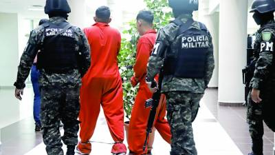

Solo hay 672 condenados; 3,700 muertes de mujeres en impunidad
Un total de 1,346 hombres fueron acusados por muerte de mujeres en los juzgados de los cuales se emitieron 1,187 resoluciones entre condenatorias y absolutorias. La ultima diligencia en la investigación fue la exhmunación de su cuerpo que los fiscales y forense hicieron en noviembre de 2023.
La exhumación fue hecha para buscar más indicios en los restos humanos o recolectar muestras para seguir haciendo más estudios. Debido a que el caso se registró en una zona rural del país pudo ser que al cuerpo de la mujer nunca le practicaron un autopsia y que quieran sacar de él tal vez alguna bala, explica un forense cosultado que prefierió no dar su nombre.
A criterio de Seydi Irías, coordinadora del Observatorio de la Red Lésbica Cattrachas, la impunidad se genera debido a que los procesos de investigación que desarrollan las autoridades hondureñas, no son profundos.
El coronel de infantería, Ramiro Fernando Muñoz Bonilla, jefe de la Policía Militar del Orden Público (PMOP), encargada del control de los centros penales, manifestó que “no es posible que nosotros nos quedemos callados o que no tomemos decisiones cuando se están dando cosas como estas”.